Keisen
Keisen · Fukuoka
Keisen
Highlighted on the Fukuoka map.
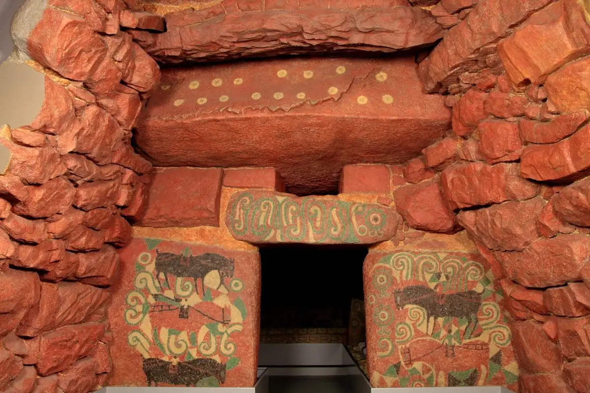
Dining
おやまうどん 桂川町
Oyamaudon Katsuragawa Machi
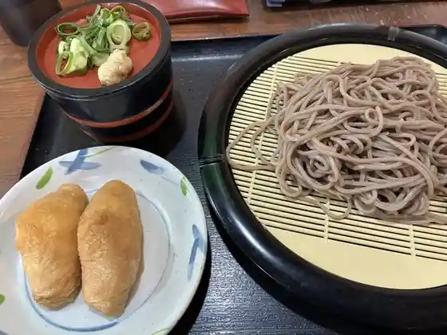
大助うどん
Daisuke Udon
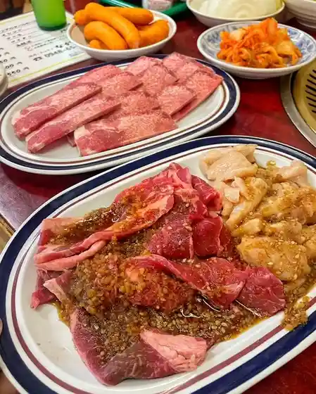
焼肉・ホルモン ながはた
焼肉・ホルモン ながはた
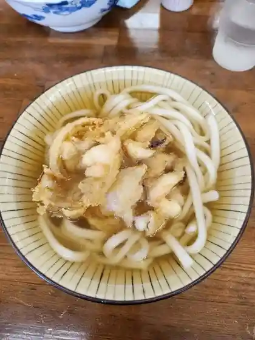
うどん・そば 恵比寿
うどん・そば 恵比寿
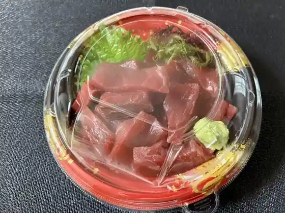
ふる川
Furu Kawa
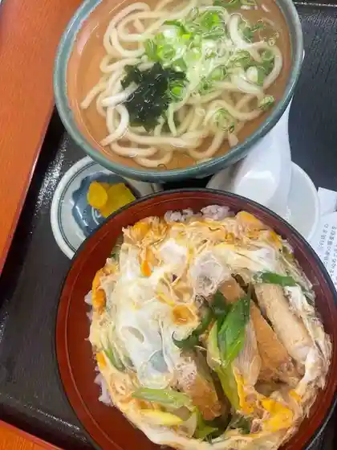
七福うどん
Shichi Fuku Udon
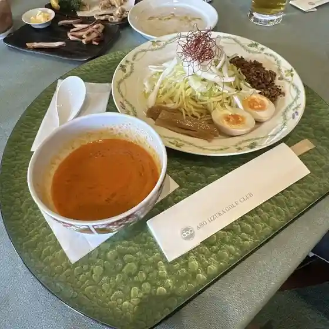
麻生飯塚ゴルフ倶楽部 レストラン
Asou Iizuka Gorufu Kurabu Resutoran
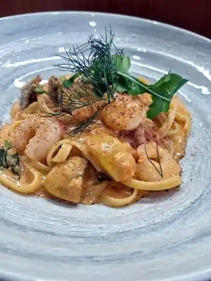
ビストロ松の樹
Bisutoro Matsu No Ki
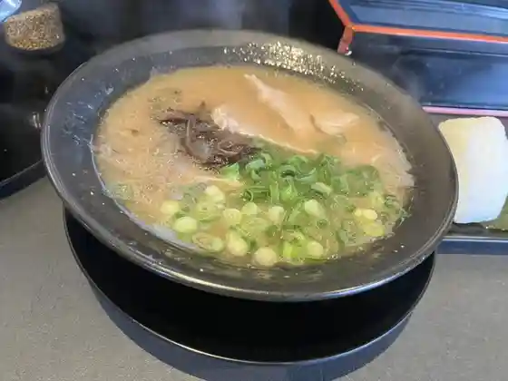
らぁめん籠目
Raamen Kago Me
鮨処 のり助
Sushi Tokoro Nori Jo
麺屋.千寿 桂川店
Men Ya . Chizu Katsuragawa Mise
MINA 嘉穂店
MINA
べんとうのピクニック
Bentouno Pikunikku
merci
merci
RHINO CAFE
RHINO CAFE
リオ
Rio
倖寿し
Kou Hisashi Shi
丸貴ラーメン
Maru Takashi Raamen
山賊からあげ
Sanzoku Karaage
菜の香
Na No Kaori
祥禾
Shou Nogi
秘伝の味 からあげ屋
Hiden No Aji Karaage Ya
味のさんぐん
Aji Nosangun
マメタ
Mameta
LANI
LANI
たこ焼亭 桂川店
Tako Yaki Tei Katsuragawa Mise
野の花
No No Hana
餃子のマルサ
Gyouza No Marusa
さかなや月
Sakanaya Gatsu
ブーランジェリー ノーム
Buuranjierii Noomu
魚城
Sakana Shiro
英国亭
Eikoku Tei
銀の響
Gin No Kyou
がんば
Ganba
やぶれ屋
Yabure Ya
福徳長愛ちゃんラーメン
Fukutoku Chou Ai Chan Raamen
河上
Kawakami
茜屋 本店
Akaneya Honten
SUPER BAGEL
SUPER BAGEL
姫たこ
Hime Tako
なかしま
Nakashima
炭火焼鳥 元家
Sumibi Yakitori Moto Ie
焼肉馬刺 上杉
Yakiniku Basashi Uesugi
パン工房 ひなの家
Pan Koubou Hinano Ie
ハルハル
Haruharu
串や 呑風
Kushi Ya Don Kaze
Toi Toi
Toi Toi
Mio:Donut
MioDonut
SOFTCREAM STAND toitoi
SOFTCREAM STAND toitoi
めん六や 福岡桂川店
Men Roku Ya Fukuoka Katsuragawa Mise
はいびすかす
Haibisukasu
鳥のタタキ専門店 鳥平
Tori No Tataki Senmonten Tori Taira
てっちゃん
Tetchan
はらなか
Haranaka
つづみ
Tsuzumi
和やん
Nagoya N
やきとり のっぽ
Yakitori Noppo
K's FARM
K&39s FARM
ファミリーマート 桂川土師店
Famiriimaato Katsuragawa Haji Mise
焼っ八
Yatsu Hachi
多楽福
Ta Raku Fuku
居酒屋ふくろう
Izakaya Fukurou
あおやぎ
Aoyagi
満山
Manzan
セブンイレブン 桂川町役場前店
Sebun'irebun Katsuragawa Machiyakuba Mae Mise
たこ女-すけ
Tako Onna - Suke
ぽっぽや
Poppoya
からあげ とり壱 桂川店
Karaage Tori Ichi Katsuragawa Mise
ニクニク
Nikuniku
Uesugi Yakiniku Shop
Uesugi Yakiniku Shop
Nagahata
Nagahata
Yamasui
Yamasui
Kaho Ramen Kaguma
Kaho Ramen Kaguma
Seikin Ktsuragawa
Seikin Ktsuragawa
Karaoke Hime
Karaoke Hime
Kouzushi
Kouzushi
Morizushi
Morizushi
Basket Eyes
Basket Eyes
Kaho High School Cafeteria Jujiya
Kaho High School Cafeteria Jujiya
Fu Kino Tou
Fu Kino Tou
Chidoriya Keisen
Chidoriya Keisen
Itsutsuboshi
Itsutsuboshi
Uoshiro
Uoshiro
Tecchan
Tecchan
Tarafuku
Tarafuku
Chidoriya Keisen Haji
Chidoriya Keisen Haji
Daichan no Yakitori
Daichan no Yakitori
Korean Yakiniku Kudara
Korean Yakiniku Kudara
Okonomiyaki Fukuju
Okonomiyaki Fukuju
Gamba
Gamba
Sanukiya
Sanukiya
Ichifuku Ramen
Ichifuku Ramen
Bistro Matsu No Ki
Bistro Matsu No Ki
Iori Torio
Iori Torio
Tacchan
Tacchan
Izakaya Maro Maro
Izakaya Maro Maro
Sights
Ozuka Burial Mound
Ozuka Soshoku Kofun Kan
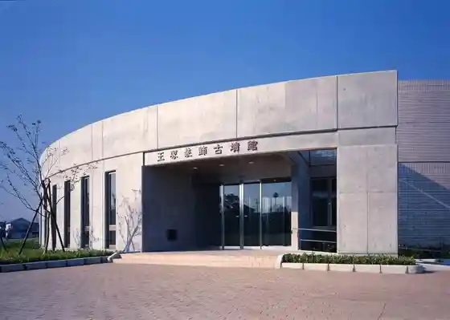
Akaneya
Yu no Ura Sogo Campground
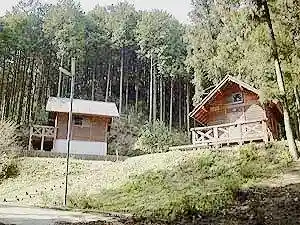